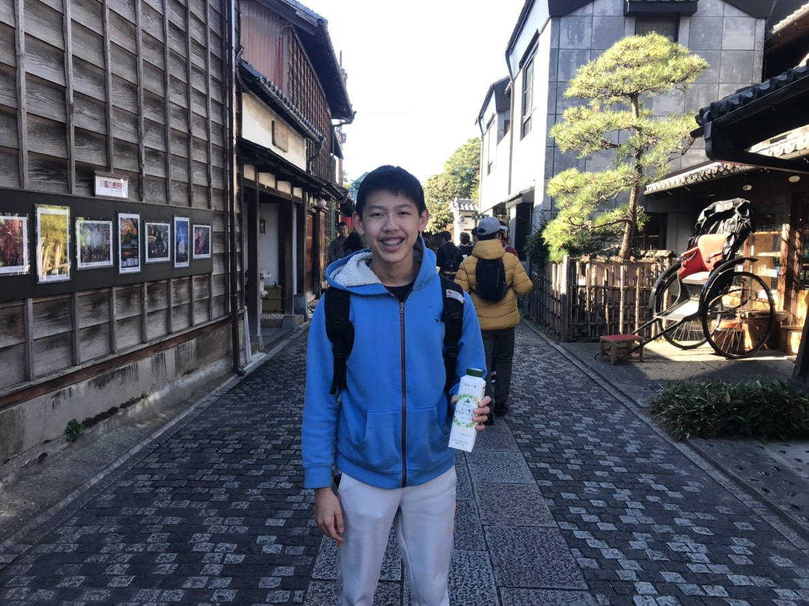

About Me

Peak started off as a regular, plain old summer project of 2019. Today, it is a platform for me, Pitchaya Manopchantaroj, to create thrilling games and entertain the world. I am currently a high school student, interested in coding and gaming, and wanting to create a new chapter for myself. Through this project, I'm hoping to improve in coding and explore how coding can influence others. My mission is to do everything possible to create, in my eyes, the "perfect" game and hopefully inspire you to create one as well. I will be delivering my style and creativity through computer programming languanges, such as, C#, html, css, processing, etc. I'm excited to learn more about you and to potentially make a game based on your feedback. Stay tuned for more exciting games to come in future projects!